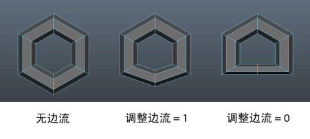

在“建模”(Modeling)菜单集中，选择“网格工具 > 偏移循环边”(Mesh Tools > Offset Edge Loop) >  可打开这些选项。有关如何使用该工具的详细信息，请参见创建偏离边的循环边。
可打开这些选项。有关如何使用该工具的详细信息，请参见创建偏离边的循环边。
- 删除边(Delete edge)
-
在部分内部循环边上偏移边时，在循环的两端创建的新多边形可以是三边的多边形。启用“删除边”(Delete edge)后，会删除循环的开始边和结束边，以在网格上保持四边拓扑。启用“工具完成”(Tool Completion) -“自动”(Automatically)选项后，“删除边”(Delete edge)选项将不可用。
- 使用边流插入(Insert with edge flow)
-
可以插入遵循周围网格曲率的循环边。默认情况下此选项已禁用，但可以通过在标记菜单（Ctrl + Shift + 右键单击）中选择和取消选择“边流”(Edge Flow)来切换“使用边流插入”(Insert with edge flow)。
- 调整边流(Adjust Edge Flow)
-
在插入边之前，输入值或调整滑块以更改边的形状。
将“调整边流”(Adjust Edge Flow)设置为 1 可变换边的曲面曲率以遵循周围网格的曲率。设置为 0 时，选定的边将移动到附近其他边的中间，从而形成平面。 - 边偏移(Edge offset)
-
仅当将“偏移循环边”(Offset Edge Loop)设定为用作动作时，“边偏移”(Edge offset)才可用。该选项可确定在选定边的两个相邻边上放置偏移边的距离。“边偏移”(Edge offset)单位基于选定边和两侧的相邻边之间距离的百分比。例如，将“边偏移”(Edge offset)设定为 0.5（默认值）可将偏移边放置在选定边和原始相邻反向边的中间。
- 开始/结束顶点偏移(Start/end vertex offset)
-
确定两个顶点在选定边（或循环边中一系列连接的边）两端上的距离将从选定边的原始位置向内偏移还是向外偏移。默认偏移为 0。“开始/结束顶点偏移”(Start/end vertex offset)单位基于选定边长度的百分比。
使用“属性编辑器”(Attribute Editor)或“通道盒”(Channel Box)通过编辑“PolyDuplicateEdge 节点”(PolyDuplicateEdge node)可以编辑这两个偏移属性。
- 平滑角度(Smoothing angle)
-
指定完成操作后是否自动软化或硬化沿循环边插入的边。如果将“平滑角度”(Smoothing angle)设定为 180（默认值），则插入的边将显示为软边。如果将“平滑角度”(Smoothing angle)设定为小于 180 的值，则插入的边将显示为硬边。
- 工具完成(Tool completion)
- 仅当将“偏移循环边”(Offset Edge Loop)设定为用作工具时，“工具完成”(Tool completion)设置才可用。
- 自动(Automatically)
-
如果启用“自动”(Automatically)选项（默认），则在单击、拖动以定位边定位器并释放鼠标按钮后会立即在边选择中插入新边。如果选择“自动”(Automatically)，则“删除边”(Delete Edge)选项将不可用。
- 按 Enter 键(Press enter)
-
如果选择“按 Enter 键”(Press enter)，则在按 Enter 键或鼠标右键并从标记菜单中选择“完成工具”(Complete Tool)之前，偏移边预览线将保持不变。要选择和偏移部分循环边或多方向循环边路径时，可以使用“按 Enter 键”(Press enter)设置。
注： 如果选定“按 Enter 键”(Press enter)，则可以双击以选择多边形网格中的整个循环边（类似于使用“选择循环边工具”(Select Edge Loop Tool)），然后定位偏移边预览定位器。启用“自动”(Automatically)后，双击边会立即在可能不希望的位置插入偏移边。
- 保持位置(Maintain position)
- 保持位置选项可指定在多边形网格上插入新边的方法。
- 与边的相对距离(Relative distance from edge)
-
如果将“保持位置”(Maintain position)设定为“与边的相对距离”(Relative distance from edge)（默认），则会基于沿选定边的百分比距离沿选定边定位点预览定位器。例如，如果单击选定边并将其拖动到沿选定边约一半距离的位置，则线预览定位器将大概显示在其他所有沿选定环形边的所有其他条边的中间位置。
- 与边的相等距离(Equal distance from edge)
-
如果将“保持位置”(Maintain position)设定为“与边的相等距离”(Equal distance from edge)，则点预览定位器将基于单击第一条边的位置沿选定边在绝对距离处进行定位。当边的长度可变性较大时，该工具将使用最短的边来确定预览定位器可以移动的最大距离。如果希望在从现有边的特定距离处插入新边，则可以使用该选项。例如，在要控制可能要在网格上执行的任何后续边折痕的情况下。
注： 预览定位器可以移动的距离受相关环形边上最短边的长度限制。如果定位器快速捕捉到两个边中的任意一边，则可能会指示环形边中限制定位的一条较短的边。